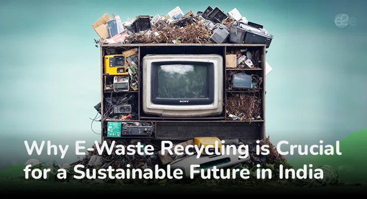

The IT wave has massively increased the demand for electronic equipment, leading to a surge in e-waste piling up in landfills. While we eagerly upgrade to the latest laptops, smartphones, and gadgets, e-waste disposal remains a growing environmental concern. E-waste management in India is becoming a critical challenge. With a population of 1.453 billion, India is the third-largest producer of e-waste after the United States and China. Without sustainable proper disposals and corporate e-waste recycling methods, our country’s growth will face significant threats from emerging health hazards and severe environmental damage. A comprehensive solution, like secure data destruction services and professional e waste handling in major tech hubs like Bangalore, Chennai, and Hyderabad, is essential to protect our environment and ensure a healthier future.
Implementing sustainable e-waste disposal not only minimises environmental harm but also brings a range of benefits. Let’s explore the advantages of e-waste recycling for a sustainable future in India.
E-waste recycling helps recover precious materials from electronic devices, such as gold, silver, and palladium, which are crucial for various industries. Recycling allows these valuable metals to be reused, reducing the need for new raw materials. For example, recycling one million mobile phones can yield up to 35,000 pounds of copper, 772 pounds of silver, and 75 pounds of gold. This process helps reduce environmental damage caused by mining, which can disrupt ecosystems and lead to deforestation. By promoting e-waste recycling in India, we can lower our reliance on environmentally destructive mining and conserve natural resources.
Electronic waste disposal is a significant factor in greenhouse gas emissions. Manufacturing new electronic devices is energy-intensive and contributes substantially to carbon emissions. Recycling e-waste reduces the demand for new materials, which are more energy-consuming to process than recycled ones. Improper e-waste management practices in India, like burning, release harmful chemicals such as mercury, lead, and cadmium into the atmosphere, posing health risks and contributing to climate change. A structured e-waste management system can prevent such emissions, reducing India's carbon footprint and helping mitigate climate change.
Improper disposal of electronic waste by burning or dumping in landfills leads to serious environmental damage. E-waste contains toxic substances like mercury, cadmium, and lead, which can leach into the soil and contaminate groundwater, impacting local communities and ecosystems. By promoting safe e-waste recycling methods, we can ensure that e-waste is processed responsibly, preventing the release of these toxins and protecting both human health and the environment.
Despite being a major e-waste producer, India’s e-waste recycling sector remains largely untapped. Much of India’s e-waste is handled by the informal sector, where unsafe and environmentally harmful practices are common. By adopting sustainable waste management strategies, India can unlock numerous economic benefits. Establishing formal recycling facilities can create jobs, support local economies, and stimulate economic growth. Additionally, recovering precious metals from e-waste generates revenue and enhances cash flow in the economy.
Various e-waste management strategies are being implemented worldwide to tackle the growing problem of electronic waste. Some effective methods include:
Improper e-waste disposal in India exposes workers and communities to hazardous substances, leading to serious health issues. The informal sector, which dominates e-waste recycling in India, often employs vulnerable populations without protective measures. Establishing formal recycling facilities with strict safety protocols can protect workers from toxic chemicals, ensuring safer working conditions.
Recycling electronic waste is essential for India’s sustainable future. By reusing valuable materials, reducing environmental damage, lowering greenhouse gas emissions, creating economic opportunities, and protecting public health, e-waste management aligns with India’s environmental and economic goals. Adopting comprehensive recycling methods, strengthening EPR policies, promoting awareness, and encouraging responsible disposal practices are vital for building a cleaner, healthier, and more sustainable future for all.